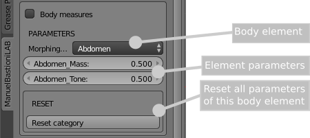

Detail parameters
Low level parameters are modifiers that act on a small detail of the anatomy like the point of nose, the inner corner of the eyes and the size of the mouth.
They are hundreds of modifiers, hidden by default. The control GUI can be enabled checking the option "Body, face and measure parameters" as indicated in the image below.

When enabled, the interface will show a new set of tools.

By default, the measures are not enabled and the column shows only the anatomic details. The upper element is the selector for the morphing category.
A morphing category is a body element (for example the head) or a set of morphings (for example the expression units).
Enabling the measures editor, the GUI is divided in two main sections: the column of anatomical parameters and the column of dimensions. The second column is dedicated to measures: see this page for more information.

Depending on the category selected, the panel will show some sliders to increase or decrease a specific feature. In most of cases the parameters are very intuitive, for example increasing or decreasing the length of upper arm, but in some cases you need to try to see what happens, for example increasing or decreasing the dolichocefal value of the head.
The button "Reset category" resets all the sliders of the selected category, setting their value to 0.5.
The button "Reset All" resets all the sliders of all categories, setting their value to 0.5.